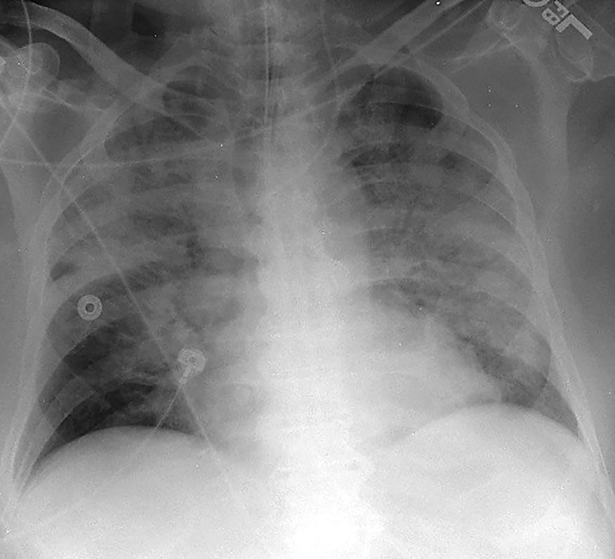

Surgical Critical Care
Summary
This page covers the systemic inflammatory response that follows injury and infection, the haemodynamic and respiratory numbers used to monitor it, the modes and settings of mechanical ventilation, acute respiratory distress syndrome, acute kidney injury, sepsis and its bundles, and the criteria for brain death; shock has its own page. Oxygen delivery is cardiac output × arterial oxygen content × 10 [1].
Definition
Systemic inflammatory response syndrome (SIRS) is defined by four criteria: a temperature above 38°C or below 36°C, a heart rate above 90 beats per minute, a respiratory rate above 20 per minute or a PaCO2 below 32, and a white cell count above 12,000/μL or below 4,000/μL [1]. Sepsis is SIRS plus infection, and septic shock is sepsis plus hypotension [1]. Multiple organ dysfunction is progressive but reversible dysfunction of two or more organs arising from an acute disruption of normal homeostasis [1].
The Sepsis-3 definition, from 2016, states sepsis differently: life-threatening organ dysfunction caused by a dysregulated host response to infection [2]. On that definition septic shock is sepsis requiring vasopressor therapy to maintain the mean arterial pressure together with a lactate above 2 mmol/L despite adequate fluid resuscitation, and it carries a mortality above 40% [2].
ARDS is acute diffuse inflammatory lung injury producing increased pulmonary vascular permeability, increased lung weight and loss of aerated lung tissue; the Berlin definition of 2012 grades it mild, moderate and severe, with mortality up to 45% in severe disease [2].
Pathophysiology
The response to injury
The main initial cytokine response to injury and infection is release of TNF-alpha and IL-1, and this initiates the inflammatory cascade [3]. Macrophages are the largest producers of TNF-alpha, which increases adhesion molecules, is overall procoagulant, causes cachexia in cancer, and activates neutrophils and macrophages to produce more cytokines; at high concentrations it can cause SIRS, shock and multisystem organ failure [3].
- IL-1 is responsible for fever, raising the thermal set point through PGE2 in the hypothalamus, which is why NSAIDs reduce fever by reducing PGE2 synthesis [3].
- The same mechanism explains the fever of atelectasis: alveolar macrophages release IL-1 [3]. IL-6 increases the hepatic acute phase proteins, C-reactive protein and amyloid A, and is the most potent stimulus for that response [3].
- IL-8 is chemotactic for neutrophils and drives angiogenesis; IL-10 decreases the inflammatory response [3].
The acute phase response moves proteins in both directions. C-reactive protein (an opsonin that activates complement) amyloid A and P, fibrinogen, haptoglobin, caeruloplasmin, alpha-1 antitrypsin and C3 all rise; albumin, prealbumin and transferrin all fall [3]. That fall is the reason albumin is a poor nutritional marker in a patient who is acutely unwell.
SIRS is mediated by massive IL-1 and TNF-alpha release, and endotoxin (the lipid A component of lipopolysaccharide) is the most potent stimulus for it [1]. The result is capillary leakage, microvascular thrombi, shock and eventually end-organ dysfunction [1]. The named causes are shock, infection (most commonly pneumonia) burns, multi-trauma, pancreatitis and ARDS [1].
Leucocyte recruitment
Rolling adhesion is mediated by selectins: L-selectin on leucocytes binds E-selectin on endothelium and P-selectin on platelets [3]. Firm anchoring follows through beta-2 integrins, the CD11/18 molecules on leucocytes, which bind ICAM and related molecules on endothelium; ICAM, VCAM, PECAM and ELAM also mediate transendothelial migration [3].
Oxygen delivery and consumption
Arterial oxygen content is haemoglobin × 1.34 × oxygen saturation, plus the small dissolved fraction of PO2 × 0.003 [1]. Oxygen delivery is cardiac output × arterial oxygen content × 10, and oxygen consumption is cardiac output × the arteriovenous content difference [1]. The normal delivery-to-consumption ratio is 4:1, and cardiac output rises to keep it constant; consumption is usually supply independent until delivery falls to low levels [1].
- Mixed venous saturation moves in interpretable directions.
- A high SvO2 occurs with increased shunting or decreased oxygen extraction, sepsis, cirrhosis, cyanide toxicity, hyperbaric oxygen, hypothermia, paralysis, coma [1].
- A low SvO2 occurs with increased extraction, as in malignant hyperthermia, fever or seizures, or with reduced delivery from a fall in saturation, cardiac output or haemoglobin [1].
The oxygen-haemoglobin dissociation curve shifts right, unloading more oxygen, with a rise in CO2 (the Bohr effect), a rise in temperature, increased ATP or 2,3-DPG production, or a fall in pH; the opposite of each shifts it left [1]. The normal p50, the tension at which half the receptors are saturated, is 27 mmHg [1].
Two anatomical facts are worth holding: the blood with the lowest venous saturation is coronary sinus blood at 30%, and the highest is renal venous blood at 80% [1]. The kidney receives 25% of the cardiac output, the brain 15% and the heart 5% [1].
Schwartz's curve: above the critical delivery point (DO₂crit) consumption is supply-independent and set by hormonal milieu and workload; below it consumption falls linearly because extraction can no longer compensate, the slope reflecting the bed's maximal extraction; normal pulmonary artery catheter values are CVP 0–6 mmHg, wedge 6–12, mixed venous saturation 65–70%, cardiac output 4–6 L/min (index 2.5–3.5), right ventricular ejection fraction over 55%, stroke volume 40–80 mL, SVR 800–1400 and PVR 100–150 dyne·s·cm⁻⁵, oxygen delivery 400–660 and consumption 115–165 mL/min/m²; by the Fick equation mixed venous saturation = arterial saturation − VO₂/(cardiac output × Hb × 1.36), so a low value means low output, low arterial saturation, anaemia or raised metabolic rate [4]. Even normal cardiac output does not guarantee capillary perfusion when arteriolar tone is dysregulated or vessels are plugged by thrombus, leukocytes or platelets [4].
Ventilation and perfusion mismatch
- Dead space is lung that is ventilated but not perfused.
- Normally this is the airway down to the bronchiole, about 150 mL of conducting airway [1].
- The most common cause of increased dead space (a high V/Q ratio) is excessive PEEP compressing capillaries; other causes are a fall in cardiac output with capillary collapse, pulmonary embolism and pulmonary hypertension [1].
- Increased dead space raises the PCO2 [1].
Shunt is the mirror image: perfusion without ventilation. The most common cause of increased shunt is atelectasis; others are a mucus plug and ARDS, in which the alveoli fill with oedema [1]. Shunt causes hypoxia [1]. The V/Q ratio is highest in the upper lobes and lowest in the lower lobes [1].
Clinical features
- The early sepsis triad is hyperventilation, confusion and hypotension [1].
- Glucose handling shifts characteristically: early Gram-negative sepsis produces a low insulin with a high glucose from impaired utilisation, while late Gram-negative sepsis produces a high insulin with a high glucose from insulin resistance [1].
- Hyperglycaemia often appears just before a patient becomes clinically septic [1].
Atelectasis is the most common cause of hypoxia early after operation, and the most common cause of fever in the first 48 hours, presenting with fever, tachycardia and hypoxia; it is more common in COPD, after upper abdominal surgery and in obesity [1]. Treatment is incentive spirometry, pain control and mobilisation [1].
Fat embolism presents with petechiae, hypoxia and confusion, and can look like a pulmonary embolus; it is most common after lower limb fractures of the hip or femur and orthopaedic procedures, and can progress to ARDS with bilateral patchy infiltrates [1]. Sudan red staining may show fat in sputum and urine, and treatment is supportive [1].
Critical illness polyneuropathy is a motor-predominant neuropathy occurring with sepsis, and is a cause of failure to wean from the ventilator [1].
Aetiology
The most common cause of postoperative renal failure is intraoperative hypotension, and the same is true specifically of acute tubular necrosis [1]. The most common cause of poor urine output early after operation, however, is simple hypovolaemia, treated with fluid [1]. Seventy per cent of nephrons must be damaged before renal dysfunction appears [1].
Nephrotoxic drugs act by identifiable mechanisms. NSAIDs cause damage by inhibiting prostaglandin synthesis, which constricts the renal arterioles; aminoglycosides and contrast media cause direct tubular injury; myoglobin also causes direct tubular injury [1].
ARDS is most commonly caused by pneumonia; the other causes are sepsis, multi-trauma, severe burns, pancreatitis, aspiration and DIC [1]. The Oxford Handbook divides the same list into direct lung injury such as pneumonia and indirect mechanisms such as sepsis, major surgery, major trauma and burns [2].
Aspiration causes more damage when the aspirate has a pH below 2.5 and a volume above 0.4 cc/kg; chemical pneumonitis from aspirated gastric secretions is Mendelson's syndrome, and the most frequent site is the superior segment of the right lower lobe [1].
Diagnosis
Haemodynamic monitoring
Normal values are worth knowing as a set: cardiac output 4 to 8 L/min, cardiac index 2.5 to 4 L/min, systemic vascular resistance 1,100 ± 300, pulmonary capillary wedge pressure 11 ± 4, central venous pressure 7 ± 2, pulmonary artery pressure 25/10 ± 5, and mixed venous oxygen saturation 75 ± 5% [1].
- Wedge pressure is a surrogate for preload, being linearly related to left ventricular end-diastolic pressure, which in turn stands in for end-diastolic volume [1].
- It may be thrown off by pulmonary hypertension, mitral stenosis, mitral regurgitation, high PEEP or poor left ventricular compliance [1].
- Measurements should be taken at end-expiration, in ventilated and non-ventilated patients alike [1].
- The pulmonary artery catheter should sit in zone III, the lower lung, where respiratory influence on the wedge pressure is least [1].
- Pulmonary vascular resistance can only be measured with such a catheter, echocardiography does not measure it [1].
- The one absolute contraindication is a right-sided mechanical valve; relative contraindications are previous pneumonectomy, left bundle branch block, a recent pacemaker and right-sided endocarditis [1].
- Cardiac performance is determined by preload, afterload, contractility and heart rate [1].
- Cardiac output rises with heart rate up to 120 to 150 beats per minute and then falls, because diastolic filling time shortens [1].
- The atrial kick accounts for 20% of left ventricular end-diastolic volume [1].
- Two named reflexes describe automatic increases in contractility: the Anrep effect follows increased afterload, the Bowditch effect increased heart rate [1].
- Ventricular wall tension is the primary determinant of myocardial oxygen consumption, with heart rate second [1].
- Schwartz's practical points: cuff width should be about 40% of limb circumference (narrow cuffs over-read), oscillometric detection is unreliable in noise whereas Doppler or pulse oximeter reappearance is accurate, and finger photoplethysmography tracks invasive pressure beat-to-beat except in hypotension and hypothermia; an underdamped arterial line overestimates systolic and underestimates diastolic pressure, an overdamped one the reverse, but mean pressure stays accurate so decisions rest on the mean; peripheral systolic pressure exceeds and diastolic falls below aortic while means match; a 20-gauge or smaller radial catheter removed early and a Doppler-modified Allen test limit thrombosis, flushes are kept under 5 mL without air to avoid retrograde cerebral embolism, and line bloodstream infection is 0.4–0.7% [4].
- Continuous 12-lead ECG detected transient ischaemia in 20.5% of 185 vascular patients, V4 being the most sensitive lead (two precordial leads catch 95%), ischaemic load predicted infarction with an AUC of 0.87 and 14 of 17 episodes were silent; integrated vital-sign indices and the 26-variable Rothman Index concord with MEWS and predict ICU readmission and rapid-response calls [4].
- Preload is end-diastolic volume approximated by end-diastolic pressure (CVP for the right, wedge for the left ventricle), an exponential and compliance-dependent surrogate; contractility is the slope of the end-systolic pressure–volume line; afterload is approximated by SVR = MAP/cardiac output; the four-channel catheter (balloon, thermistor, distal and 20 cm proximal ports) goes in via right internal jugular (straightest path, lowest complications, compressible artery) or subclavian (constant landmarks under the clavicle even in oedema or obesity) under routine ultrasound by Seldinger technique, advanced with the balloon inflated through characteristic atrial, ventricular and pulmonary artery traces to a damped wedge, then deflated at once since a wedged balloon infarcts or ruptures the artery and unnecessary wedge readings are discouraged; thermodilution solves the Stewart–Hamilton equation, overestimates low outputs, averages two or three room-temperature injections across the respiratory cycle, and heated-filament continuous output agrees with boluses; continuous oximetric catheters saved blood gases in 3265 cardiac patients without changing outcome, central venous saturation tracks mixed venous imperfectly but underpins Rivers' target of ScvO₂ 70% (or SvO₂ 65%) with CVP 8–12, MAP ≥65 and urine ≥0.5 mL/kg/h in the first 6 hours of sepsis [4].
- Connors' matched observational study linked early catheterisation to higher mortality; randomised trials, Pearson (underpowered), Tuman (1094 cardiac patients), Bender and Valentine (vascular), Sandham (nearly 2000 ASA III–IV patients, no mortality difference, pulmonary embolism 0.9% vs 0%), PAC-Man (over 1000 UK ICU patients, mortality 68% vs 66%, 9.5% insertion complications), ESCAPE (433 heart failure patients, adverse events 21.9% vs 11.5%) and FACTT (1000 lung injury patients, 60-day mortality 27% vs 26%, twice the catheter events), and a 2005 meta-analysis of 13 trials showed no benefit, supraphysiological oxygen transport goals do not cut mortality, use fell from 5.66 to 1.99 per 1000 admissions between 1993 and 2004, and reasonable criteria for managing cardiac or major vascular surgery without a catheter are no supracoeliac or suprarenal clamping, no infarction within 3 months, no decompensated failure, no bypass within 6 weeks, no symptomatic valve disease and no unstable angina [4].
- Less invasive alternatives: transpulmonary thermodilution (femoral arterial thermistor; detects 12% changes, confounded by lung water, yields global end-diastolic and extravascular lung water volumes, and calibrates pulse contour systems); suprasternal Doppler (operator-dependent, needs thermodilution back-calculation) and oesophageal Doppler of the descending aorta (assumes 70% of root flow, nomogram area, good correlation with the catheter, flow time corrected guiding intraoperative volume with fewer complications and shorter stay); impedance cardiography (unreliable) and bioreactance (phase shift from aortic flow, agrees with dilution); pulse contour analysis calibrated by lithium dilution or cold bolus (as accurate as thermodilution, giving stroke volume, output, SVR and dP/dT) while uncalibrated biometric algorithms perform poorly; partial CO₂ rebreathing by a modified Fick method (impaired by shunt and instability); and TEE, now with a probe that can stay 72 hours [4].
- CVP and wedge correlate poorly with left ventricular volume and with stroke volume change, useful only at extremes (5–20 mmHg is uninformative), so preload responsiveness (a cardiac index rise of at least 15% after a fluid bolus) is best predicted in ventilated patients by pulse pressure variation, (PPmax − PPmin)/mean, invalidated by atrial arrhythmia; near-infrared muscle saturation (700–1000 nm, mostly venous since 20% of blood is arterial) at a minimum StO₂ ≤75% matched a base deficit ≥6 in predicting organ failure and death in 383 blunt trauma patients continuously and non-invasively [4].
Respiratory measurement
- Peak pressure indicates large airway pressure and is normally below 40; plateau pressure, which needs an inspiratory pause to measure, indicates alveolar pressure and is normally below 20 [1].
- The two separate the common ventilator problems: airway obstruction from bronchospasm or a mucus plug gives a high peak with a normal plateau, whereas ARDS gives a high peak and a high plateau [1].
- Plateau pressure is the better indicator of potential barotrauma [1].
The alveolar-arterial gradient is 10 to 15 mmHg in a normal non-ventilated patient [1]. Compliance is change in volume over change in pressure, and is reduced in ARDS, fibrotic lung disease, reperfusion injury, pulmonary oedema and atelectasis [1].
Restrictive and obstructive disease move the volumes in opposite directions. Restrictive disease reduces total lung capacity, residual volume and forced vital capacity, with FEV1 normal or raised; obstructive disease raises total lung capacity and residual volume and reduces FEV1, with FVC normal or reduced [1].
Several things degrade the pulse oximeter reading: nail polish, dark skin, low-flow states, ambient light, anaemia and vital dyes [1].
Schwartz notes serial gases are unnecessary for routine weaning and indwelling biosensor catheters give continuous values agreeing with the laboratory; arterial saturation in the ventilated patient depends on mean airway pressure (PEEP, inspiratory time), FiO₂ and mixed venous saturation (raised by haemoglobin, output or lower consumption through sedation and paralysis); peak pressure reflects tidal volume, resistance, compliance and flow while plateau pressure (expiratory hold) reflects compliance alone, so both raised means reduced compliance (pneumothorax, haemothorax, atelectasis, oedema, pneumonia, ARDS, chest wall activity, abdominal distension, intrinsic PEEP), raised peak with normal plateau means resistance (bronchospasm, small or kinked tube) and a low peak means disconnection; limiting plateau to under 30 cmH₂O and tidal volume to 6 mL/kg ideal weight cut 28-day ARDS mortality by 22%, benefits ventilated patients without ARDS and high-risk anaesthesia; pulse oximetry at 660 and 940 nm reads carboxyhaemoglobin as oxyhaemoglobin, shows 85% with marked methaemoglobinaemia, loses accuracy under 92% and reliability under 85%, and reduces unrecognised deterioration and ICU transfer; pulse CO-oximetry estimates total haemoglobin non-invasively but overestimates at low values; capnometry by infrared absorption at 4.27 µm gives an end-tidal CO₂ normally 1–5 mmHg below arterial, confirms intubation, and a sudden fall means sampling-line obstruction, airway loss, disconnection, ventilator failure or a collapse in output (arrest, massive embolism, cardiogenic shock), persistently low values follow hyperventilation or dead space, and high values reduced ventilation or hypermetabolism [4].
Renal assessment
The fractional excretion of sodium is the best test for azotaemia [1]. The standard measurements separate prerenal from parenchymal failure: urine osmolarity above 500 versus 250 to 350 mOsm, a urine-to-plasma osmolality ratio above 1.5 versus below 1.1, a urea-to-creatinine ratio above 20 versus below 10, urine sodium below 20 versus above 40, and FENa below 1% versus above 3% [1].
Post-renal failure from obstructive uropathy is diagnosed on ultrasound, which shows hydronephrosis [1].
Schwartz measures bladder pressure after 50–100 mL of saline, supine at end-expiration: intra-abdominal hypertension is ≥12 mmHg on three readings 4–6 hours apart, graded I 12–15, II 16–20, III 21–25 and IV over 25 (normal 5–7), and abdominal compartment syndrome is ≥20 mmHg on three readings 1–6 hours apart with new organ dysfunction, first described after ruptured aneurysm repair, with gastric or caval pressure as alternatives [4].
Sepsis screening
- Procalcitonin is elevated in sepsis but is not specific (higher sensitivity, lower specificity) so it is good for ruling sepsis out, and useful for deciding when to stop antibiotics as it normalises [1].
- Serial lactates guide volume resuscitation, with a target below 2.0 [1].
- Fungitell, the 1,3 beta-D-glucan assay, is a blood test for invasive fungal infection, and mannan antigen and antibody testing for invasive candida [1].
Thresholds and severity
ARDS is graded by the PaO2/FiO2 ratio: 200 to 300 mild, 100 to 200 moderate, below 100 severe [1]. The four criteria are acute onset, bilateral pulmonary infiltrates, a PaO2/FiO2 of 300 or less, and absence of heart failure with a wedge pressure below 18 mmHg [1].
The Berlin definition states the same in four domains: timing within one week of a known insult or of new or worsening respiratory symptoms; bilateral opacities on chest imaging not fully explained by effusion, collapse or nodules; respiratory failure not fully explained by cardiac failure or fluid overload, with objective assessment such as echocardiography to exclude hydrostatic oedema where no risk factor is present; and oxygenation graded on the PaO2/FiO2 ratio at a PEEP of at least 5 cmH2O [2].
Weaning parameters are best summarised by the rapid shallow breathing index, respiratory rate divided by tidal volume, which should be below 100 and is the best single predictor of successful extubation [1]. The rest of the set: negative inspiratory force above 20, FiO2 40% or less, PEEP 5, pressure support 5, respiratory rate below 24 per minute, heart rate below 120, PO2 above 60 mmHg, PCO2 below 50 mmHg, pH 7.35 to 7.45, saturations above 93%, off pressors, following commands and able to protect the airway [1].
Keep the FiO2 at or below 60% to prevent oxygen radical toxicity [1]. If the plateau pressure exceeds 30, reduce the tidal volume and consider pressure control ventilation [1].
Carboxyhaemoglobin is abnormal above 10%, or above 20% in smokers [1]. Carbon monoxide has 250 times the affinity of oxygen for haemoglobin, falsely raises the pulse oximeter reading, and shifts the dissociation curve left; treatment is usually 100% oxygen, rarely hyperbaric [1].
- The UK screens with qSOFA and treats with the Sepsis Six, and the two are different tools for different moments.
- Quick SOFA identifies patients with suspected infection who need investigating for organ dysfunction: altered mentation, a respiratory rate of 22 per minute or more, and a systolic blood pressure of 100 mmHg or less, any two of the three [2].
- An acute rise of 2 or more in the Sequential Organ Failure Assessment score in a patient with suspected or documented infection constitutes sepsis, carrying an overall mortality risk of 10% in a general hospital population [2].
- The clinical and biochemical elements of SOFA are the PaO2/FiO2 ratio, the Glasgow Coma Scale, bilirubin, cardiovascular status including mean arterial pressure and vasopressor use, serum creatinine and urine output, and platelets [2].
The Sepsis Six is a one-hour bundle, performed within the first hour of presentation: give oxygen to a target saturation above 94%, or 88 to 92% in those at risk of hypercapnic respiratory failure; take blood cultures before giving antibiotics; give broad-spectrum intravenous antibiotics; start intravenous fluid resuscitation; measure urine output; and measure serum lactate [2].
- The Surviving Sepsis Campaign bundle runs on a longer clock.
- Within 3 hours: measure serum lactate, take blood cultures, give broad-spectrum intravenous antibiotics, and give 30 mL/kg of crystalloid for hypotension or a raised lactate [2].
- Within 6 hours: vasopressors to maintain the mean arterial pressure if there has been no response to fluid, reassessment of volume status and tissue perfusion, and repeat lactate if the initial one was elevated [2].
- Source control has its own timing.
- Infections arising from a specific anatomical diagnosis (necrotising skin infection, peritonitis, bowel infarction) should have source control within 12 hours, by the most minimally invasive but effective method available, percutaneous in preference to open where that will do; intravascular lines suspected of being infected should be removed as soon as feasible [2].
- Critical care should be involved early if there is no response to initial management [2].
Treatment and Management
Ventilator settings
- Oxygenation and ventilation are adjusted with different levers.
- To improve oxygenation, increase PEEP to recruit alveoli and improve functional residual capacity, or increase the FiO2 or mean airway pressure; to reduce CO2, increase the respiratory rate or tidal volume [1].
- PEEP improves functional residual capacity and compliance by keeping alveoli open, and is the best way to improve oxygenation [1].
Excessive PEEP has a predictable set of consequences: reduced right atrial filling, which is the main reason cardiac output falls, a drop in blood pressure, reduced renal blood flow with a rise in renin, reduced urine output, a raised wedge pressure and raised pulmonary vascular resistance [1].
Ventilator-induced lung injury has two mechanisms: oxygen radicals from a high FiO2, and barotrauma from high pressure [1].
- The modes trade barotrauma against hypoventilation.
- In assist control both rate and tidal volume are preset and every breath is supported, which risks barotrauma from the fixed tidal volume and hyperventilation if the patient's own rate is high [1].
- SIMV also presets rate and tidal volume but synchronises with the patient and allows unsupported spontaneous breaths above the set rate, preventing hyperventilation, though barotrauma remains possible and patients can tire on the unsupported breaths [1].
- Pressure control ventilation presets rate and inspiratory pressure, giving variable tidal volumes, which limits barotrauma but can lead to hypoventilation if the patient coughs or fights the ventilator; it is used at times for ARDS and permissive hypercapnia [1].
- Pressure support presets inspiratory pressure with no rate, reduces the work of breathing, and can be added to SIMV or used alone [1].
A spontaneous awakening trial and a spontaneous breathing trial are usually needed at least once a day while a patient is ventilated [1].
ARDS
- Treatment is low tidal volume ventilation with permissive hypercapnia.
- Use a tidal volume of 4 to 6 cc/kg to keep plateau pressures below 30, with PEEP 10 to 15, increase inspiratory time to improve oxygenation, and keep the pH above 7.20, adjusting the ventilator or considering bicarbonate [1].
- Paralysis and prone positioning are useful, and inhaled nitric oxide can be considered [1].
- The Oxford Handbook frames management as supportive throughout, optimised ventilator strategies, targeted antimicrobial therapy, negative fluid balance and additional organ support, with muscle paralysis, inverse ratio and prone ventilation as advanced strategies and ECMO for patients refractory to conventional treatment [2].

Sepsis
Treatment is volume resuscitation with cultures sent, and antibiotics after the cultures are taken [1]. Noradrenaline is the primary vasopressor for septic shock, with vasopressin secondary, and glucose should be kept below 180 [1]. The underlying cause of SIRS must be treated; the syndrome itself has no specific therapy [1].
Renal support
Oliguria is worked through in order: first make sure the patient is volume loaded, aiming for a CVP of 11 to 15 mmHg; then try a diuretic trial with furosemide; then dialyse if needed [1]. Prerenal failure is treated with volume, renal failure such as ATN with a diuretic trial aiming to convert it to non-oliguric, and post-renal failure by relieving the obstruction [1].
Indications for dialysis are fluid overload, hyperkalaemia, metabolic acidosis, uraemic encephalopathy, uraemic coagulopathy and poisoning [1]. Haemodialysis is rapid but causes large volume shifts, raising the haematocrit by about 5 for each litre removed; continuous venovenous haemofiltration is slower and better tolerated by patients who cannot take those shifts, such as those in septic shock, raising the haematocrit by 5 to 8 per litre removed [1].
Vasoactive drugs
The adrenergic receptors map onto predictable effects: alpha-1 constricts vascular smooth muscle, alpha-2 constricts venous smooth muscle, beta-1 drives myocardial contraction and rate, beta-2 relaxes bronchial and vascular smooth muscle and increases renin, and dopamine receptors relax renal and splanchnic smooth muscle [1].
Dopamine changes receptor at different doses: 2 to 5 μg/kg/min acts on dopamine receptors, 6 to 10 on beta-adrenergic receptors, and above 10 on alpha-adrenergic receptors [1]. Dobutamine acts on beta-1, increasing contractility, with tachycardia at higher doses [1]. Milrinone, a phosphodiesterase inhibitor, increases cAMP, calcium flux and contractility, also relaxes vascular smooth muscle and dilates the pulmonary vessels, and is not subject to receptor downregulation, which makes it useful long term [1]. Phenylephrine is a pure alpha-1 vasoconstrictor; noradrenaline acts on alpha-1 and alpha-2 with some beta-1 and is a potent splanchnic vasoconstrictor [1]. Adrenaline is beta-predominant at low dose, where it can actually lower the blood pressure, and alpha-predominant at high dose [1].
Vasopressin acts on V1 receptors for arterial vasoconstriction, intrarenal V2 receptors for water reabsorption at the collecting ducts, and extrarenal V2 receptors that mediate release of factor VIII and von Willebrand factor [1].
Among the vasodilators, sodium nitroprusside causes cyanide toxicity at doses above 3 μg/kg/min for 72 hours, checked with thiocyanate levels and signs of metabolic acidosis and treated with amyl nitrite then sodium nitrite; nitroglycerine is predominantly a venodilator, reducing myocardial wall tension by reducing preload, and a moderate coronary vasodilator [1].
Pulmonary vascular tone is worth separating from systemic: PGE1, prostacyclin, inhaled nitric oxide and sildenafil are pulmonary vasodilators, while hypoxia is the most potent pulmonary vasoconstrictor, followed by acidosis, histamine, serotonin and thromboxane A2 [1]. Alkalosis dilates the pulmonary vessels and acidosis constricts them [1].
Adrenal insufficiency
- The most common cause is withdrawal of exogenous steroids [1].
- The acute presentation is cardiovascular collapse characteristically unresponsive to fluids and pressors, with nausea and vomiting, abdominal pain, fever, lethargy, a low glucose and a high potassium [1].
- A random cortisol below 25 is usually used for diagnosis, and hydrocortisone should be given empirically if the diagnosis is suspected, since it does not interfere with the test [1].
- Relative steroid potencies run 1× for cortisone and hydrocortisone, 5× for prednisone, prednisolone and methylprednisolone, and 30× for dexamethasone [1].
Procedural interventions
- The intra-aortic balloon pump inflates on the T wave in diastole and deflates on the P wave in systole, with the catheter tip placed just distal to the left subclavian artery, 1 to 2 cm below the top of the arch [1].
- Deflation during ventricular systole decreases afterload; inflation during diastole improves diastolic blood pressure and therefore coronary perfusion [1].
- It is used for cardiogenic shock after CABG or myocardial infarction, refractory angina awaiting revascularisation, high-risk patients preoperatively, acute mitral regurgitation and ventricular septal rupture [1].
- Absolute contraindications are aortic dissection, severe aortoiliac disease and aortic regurgitation; relative contraindications are vascular grafts and aortic aneurysms [1].
Haemoptysis after flushing a pulmonary artery catheter is a specific emergency with a specific sequence: increase the PEEP to tamponade the pulmonary artery bleed, intubate the mainstem of the unaffected side, and consider a Fogarty balloon down the mainstem on the affected side, with angioembolisation as definitive treatment and thoracotomy with lobectomy if that fails [1].
Air embolism usually occurs when a central vein is exposed to air, as during central line placement or removal or supraclavicular nodal biopsy [1]. Treatment is CPR with the patient placed head down and rolled to the left, keeping air in the right atrium and ventricle, then aspirating it through the central or pulmonary artery catheter; prevention is the Trendelenburg position when entering the neck veins [1].
Neurological monitoring
ICP monitoring is recommended for severe brain injury (GCS ≤8) with an abnormal CT, or with a normal CT and two of age over 40, motor posturing or systolic under 90, and for subarachnoid haemorrhage with coma, intraventricular blood, middle cerebral infarction, fulminant hepatic failure with oedema and global anoxia; ventriculostomy is the standard (accurate, drains CSF) with infection 5%, haemorrhage 1.1% and malfunction 6.3–10.5%, parenchymal, subdural and epidural transducers only measure; ICP over 20 predicts poor outcome, Eisenberg's trial improved outcome by holding ICP under 25 without and under 15 with craniectomy, CPP 50–70 mmHg is recommended on weak evidence, and ICP/CPP-targeted care prolonged ventilation without proven benefit beyond 24 hours [4]. Continuous EEG follows cortical activity in coma, status epilepticus, ischaemia and barbiturate titration, evoked potentials resist sedation and localise brainstem lesions or exclude them in metabolic coma, the bispectral index (0 isoelectric to 100 awake, from burst suppression, alpha/beta ratio and bicoherence) reduces anaesthetic use and speeds waking and is validated against the Sedation–Agitation Scale, transcranial Doppler middle cerebral velocity predicts symptomatic vasospasm after subarachnoid haemorrhage and supports brain-death testing when sedatives confound but cannot estimate ICP, jugular bulb oximetry falls with hypoperfusion and rises with hyperaemia (low values predict poor outcome; used only alongside ICP and CPP), transcranial NIRS remains research though handheld devices may screen for haematoma prehospital, and brain tissue oxygen (normal 20–40 mmHg, critical 8–10) added to ICP/CPP with a target above 25 mmHg cut mortality from 44% to 25% in 28 patients against historical controls by detecting ischaemia despite normal pressures [4].
Complications
- Cardiac tamponade after cardiac surgery presents as a sudden fall in chest drain output followed by hypotension and a raised wedge pressure or CVP, or as pulseless electrical activity [1].
- If the patient is arresting, the sternum is opened in the ICU by cutting the wires and using a chest spreader; if there is still a blood pressure and pulse, the patient returns to theatre for re-entry [1].
- The first echocardiographic sign is impaired diastolic filling of the right atrium, and pericardiocentesis blood does not clot [1].
- Pulmonary embolism presents with chest pain and dyspnoea, a low PO2 and PCO2, respiratory alkalosis, tachycardia and tachypnoea, anxiety and sweating, and hypotension or shock if massive [1].
- In an intubated patient it may show only as a fall in end-tidal CO2 with hypotension [1].
- The most common ECG finding is tachycardia, CT angiography is the best diagnostic test, and a normal D-dimer makes the diagnosis very unlikely, high sensitivity, low specificity [1].
- Most emboli arise from the iliofemoral region [1].
Reperfusion injury is mediated most importantly by neutrophils, with xanthine oxidase in endothelial cells forming toxic oxygen radicals on reperfusion [1].
Methaemoglobinaemia, from nitrites, makes the oxygen saturation read 85% and is treated with methylene blue; cyanide toxicity disrupts the electron transport chain so oxygen cannot be used, and is treated with amyl nitrite then sodium nitrite, or hydroxocobalamin [1].
Outcomes
- Brain death is a clinical diagnosis with prerequisites that must be excluded first: a temperature below 32°C, a blood pressure below 90 mmHg, drugs such as phenobarbital, pentobarbital or alcohol, metabolic derangements including hyperglycaemia and uraemia, and desaturation during the apnoea test all preclude the diagnosis [1].
- The findings must persist for 6 to 12 hours: unresponsive to pain, absent cold caloric oculovestibular reflexes, absent oculocephalic reflex, no spontaneous respiration, no corneal reflex, no gag reflex, fixed and dilated pupils, and a positive apnoea test [1].
- EEG shows electrical silence and MR angiography shows no blood flow to the brain [1].
- The apnoea test has a defined technique.
- The patient is preoxygenated, a catheter delivering oxygen at 8 L/min is placed at the carina through the endotracheal tube, and the CO2 should be normal before starting; the patient is then disconnected from the ventilator for 10 minutes [1].
- A CO2 above 60 mmHg, or a rise of 20 mmHg, is a positive test and meets brain death criteria; the test is terminated if the blood pressure falls below 90 mmHg, the patient desaturates below 85%, or spontaneous breathing occurs, and brain death cannot then be declared [1].
Two points on the surrounding process matter. Deep tendon reflexes can persist in brain death [1]. And the conversation about organ donation should be held by the organ procurement organisation (UNOS, in the American source) rather than by the treating physician [1].
Sepsis on the Sepsis-3 definition carries an overall mortality risk of 10% in a general hospital population, rising above 40% once septic shock is established [2]. Early recognition and timely intervention remain the cornerstone of management [2].
References
- The ABSITE Review, 2022, Ch. 16 Critical Care
- Oxford Handbook of Clinical Surgery, 5th ed., Ch. 2 Principles of surgery
- The ABSITE Review, 2022, Ch. 13 Inflammation and Cytokines
- Schwartz's Principles of Surgery, 11th ed., Ch. 13, Physiologic Monitoring of the Surgical Patient, Table 13-1
- Sabiston Textbook of Surgery, 22nd ed., Ch. 110 Lung, Chest Wall, Pleura, and Mediastinum